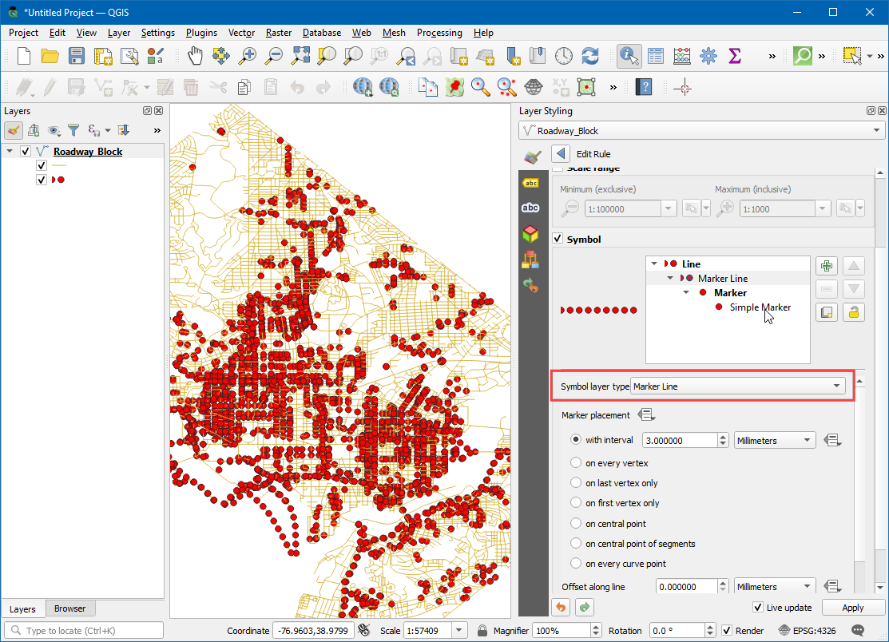
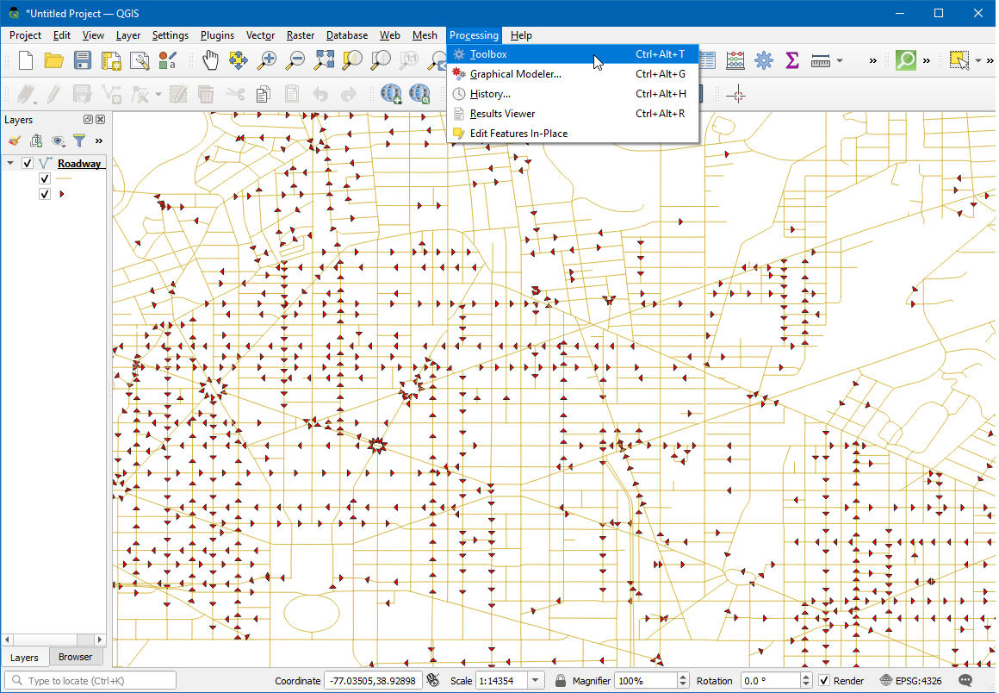
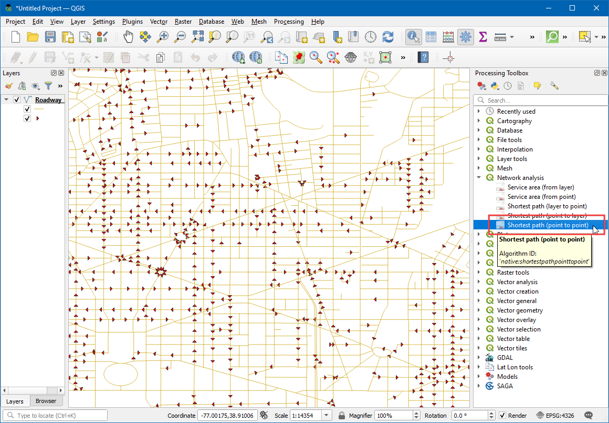
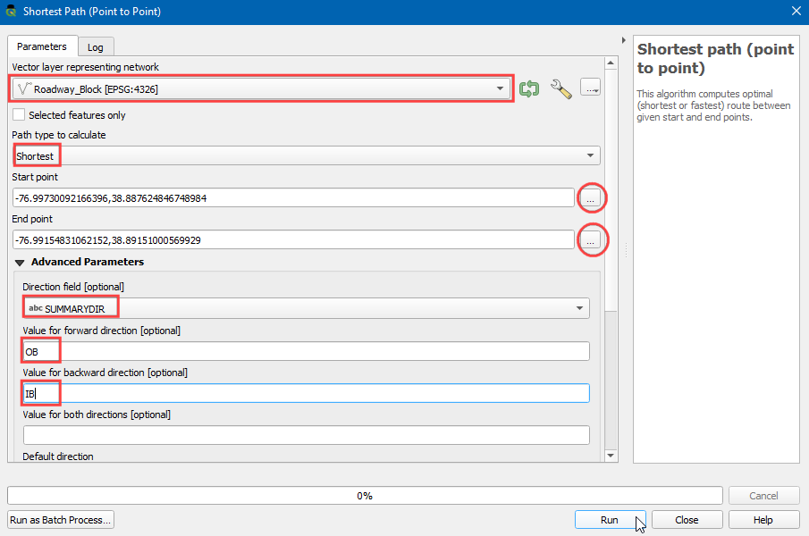

Ujaval Gandhi
Ujaval GandhiEinfache Netzwerkvisualisierung und Routing (QGIS3)¶
Die Erstellung, Visualisierung und das Managen von Netzwerken sind wichtige Bestandteile eines GIS. Viele Typen der real vorhandenen Infrastruktur wie z. B. Straßen, Eisenbahnlinien und Versorgungsleitungen können als Netzwerk aus Linien und Knoten mit jeweils zugewiesenen Eigenschaften modelliert werden. In diesem Tutorial lernen wir, wie Straßennetzwerke normalerweise modelliert werden. Wir werden einige Gestaltungstechniken anwenden, um die Eigenschaften des Routings zu visualisieren. Wir werden außerdem die in QGIS 3 enthaltenen Hilfsmittel zur Netzwerkanalyse nutzen, um die kürzeste Verbindung zwischen 2 Punkten im Netzwerk zu finden.
Überblick über die Aufgabe¶
Wie werden einen Layer mit den Mittellinien der Straßen von Washington D.C. verwenden, die Verbindungen visualisieren und ein Netzwerk erstellen. Mit Hilfe des Netzwerkes können wir den kürzesten Weg zwischen 2 beliebigen Punkten in der Stadt ermitteln.
Weitere Fähigkeiten, die wir erlernen¶
Wie man vom Dateninhalt abhängige Vorgaben für die Symbolisierung der Linienrichtung mit einem Pfeil vorgibt.
Beschaffung der Daten¶
Die Regierung des Distrikts Columbia stellt hunderte Datensätze frei zur Verfügung: Open Data Catalog.
Wir laden folgende Daten der DCGISopendata als shape-Datei herunter: Straßen-Mittellinien.

Der Einfachheit halber können wir eine Kopie der Datensätze unter folgendem Link herunterladen:
Datenquelle: [DCOPENDATA]
Arbeitsablauf¶
Suche die heruntergeladene Datei
Roadway_Block-shp.zip`im Download-Bereich. Erweitere die Datei und zieh die DateiRoadway_Block.shpin den Arbeitsbereich.

Wir sehen einen neuen Layer
Roadway_Blockim Layer-Bereich. Dieser Layer stellt alle Straßen in Washington DC dar. Wähle das Tool Objekte abfragen in der Attributwerkzeugleiste. Klicke auf einen beliebigen Straßenabschnitt, um die enthaltenen Attribute zu ermitteln. Man sieht Standardattribute wie den Straßennamen oder Straßentyp, aber es gibt auch ein AttributSUMMARYDIR. Dieses Attribut ist für das Routing wichtig, weil es Einbahnstraßen von Straßen mit Gegenverkehr unterscheidbar macht. Das Attribut enthält 4 verschiedene Werte.BD(Both directions) steht für Straßenabschnitte mit Gegenverkehr.OB(Out Bound) steht für Einbahnstraßen, auf denen der Verkehr nur in der Richtung der Linie erlaubt ist (vom Startpunkt zum Endpunkt) undIB(In Bound) für Einbahnstraßen, auf denen der Verkehr nur entgegengesetzt der Linienrichtung erlaubt ist. Für den Wert??nehmen wir eine Straße mit Gegenverkehr an. Wir verwenden die hinterlegten Informationen jetzt, um einen Pfeil für Einbahnstraßen anzuzeigen.

Klicke auf den Knopf Layergestaltungsfenster öffnen im Bereich Layer. Wähle
Regelbasierendals Darstellung aus dem drop-down Menü aus.

Wir werden einen neuen Layerstil mit Hilfe eines Filters für Einbahnstraßen erstellen. Klicke auf den Knopf Regel hinzufügen.

Im Dialog Regel bearbeiten klicken wir auf den Knopf Ausdruck.

Im Ausdruckseditor erweitern wir Felder und Werte in der mittleren Spalte. Wir wählen das Attribut
SUMMARYDIRund klicken in der rechten Spalte auf Alle eindeutigen. Es werden die 4 oben beschriebenen Werte angezeigt. Mithilfe dieser Referenzwerte wird die Bearbeitung des Ausdrucks unterstützt. Wir können später auf jeden der Werte doppelt klicken, um ihn dem Ausdruck hinzuzufügen.

Unser Ziel ist es, einen Ausdruck zu erzeugen, der alle Einbahnstraßen selektiert. Wir geben den folgenden Ausdruck ein und klicken auf OK.
"SUMMARYDIR" in ('IB', 'OB')
Als nächstes ändern wir den Symbollayertyp zu
Markierungslinie.

Wir wählen
auf Mittelpunktfür die Markierungsplatzierung.

Klicke auf das Symbol
Einfache Markierung, scrolle nach unten und wähle den Markergefülltes Dreieck. Wir sehen das das einem Pfeil ähnelnde Symbol nun für die Einbahnstraßen angezeigt wird. Allerdings ziegen alle Pfeile in dieselbe Richtung, obwohl für die Einbahnstraßen mehrere Richtungen hinterlegt sind. Wir können die Symbolik weiter verfeinern indem wir eine vom Datensatz abhängige Richtung des Symbols unter Drehung vorgeben.

Klicke auf den Knopf Datendefinierte Übersteuerung neben Drehung.

Wir können einen Ausdruck für eine Bedingung formulieren, der abhängig von der Richtung der Einbahnstraßen unterschiedliche Rotationswerte liefert. Ein Rotationswert von 180° für eine Straße mit entgegengesetzter Richtung würde die Richtungen vereinheitlichen, wenn wir sie auf Straßen mit dem Attributwert
IBanwenden. Gib den folgenden Ausdruck ein und klicke OK.
if( "SUMMARYDIR" = 'IB', 180, 0)
Wir sehen jetzt, dass die Pfeilspitzen entsprechend der Richtung und des Winkels der Einbahnstraßen ausgerichtet sind. Zur besseren Übersichtlichkeit verwenden wir die Richtungspfeile nur bei Einbahnstraßen. Für Straßen ohne Richtungsangabe nehmen wir an, dass sie in beiden Richtungen befahrbar sind. Wir können nun, da das Netzwerk korrekt modelliert wurde, einige Analysen vornehmen. Gehe zu .

Wir suchen den Algorithmus . Starte ihn mit einem Doppelklick.

Im Dialogfenster Kürzester Weg (Punkt zu Punkt) wählen wir
Roadway_Blockals Netzwerk-Vektorlayer. Den Eintrag bei Zu berechnender Wegtyp belassen wir beiKürzester. Als nächstes müssen wir einen Start- und Endpunkt vorgeben. Wir klicken dazu auf den …-Button und klicken dann auf einen beliebigen Punkt des Straßennetzes im Arbeitsbereich. Wenn man die Ergebnisse des Tutorials nachvollziehen möchte, verwendet man-76.99730092166396,38.887624846748984als Startpunkt und-76.99154831062152,38.89151000569929als Endpunkt. Wir erweitern den Bereich Fortgeschrittene Parameter und wählenSUMMARYDIRals Richtungsfeld. Wir sollten mit den Attributwerten für die Richtung der Einbahnstraßen vertraut sein und verwendenOBals Wert für Vorwärts undIBals Wert für Rückrichtung. Die anderen Werte belassen wir bei den Voreinstellungen und klicken auf Starten.

Der Algorithmus nutzt die Geometrie des Layers und die zur Verfügung stehenden Parameter, um einen Graph des Netzwerks zu erstellen. Dieser Graph wird dann verwendet, um den kürzesten Weg zwischen Start- und Endpunkt zu ermitteln. Nach Abschluss der Berechnung wird im Layer-Bereich ein neuer Layer
Kürzester Weghinzugefügt. Er zeigt den kürzesten Weg zwischen Start- und Endpunkt. Über den Schließen-Button kann das Dialogfeld geschlossen werden.

Wir können sehen, dass es viele mögliche Wege zwischen Start- und Endpunkten gibt. Durch die Einschränkungen im Netzwerk wie z. B. Einbahnstraßen, stellt das Ergebnis den unter diesen Bedingungen kürzesten Weg dar. Es bietet sich immer an, die Analyse und die getroffenen Annahmen zu überprüfen. Eine einfache Möglichkeit der Überprüfung ist die Verwendung eines anderen Kartendienstes, um dessen Ergebnisse mit unseren zu vergleichen. Man kann z. B. den kürzesten Weg zwischen denselben Start- und Endpunkten nach Google Maps zum Vergleich heranziehen. wenn wir exakt dasselbe Ergebnis erhalten, wird unsere Analyse bestätigt.

If you want to give feedback or share your experience with this tutorial, please comment below. (requires GitHub account)